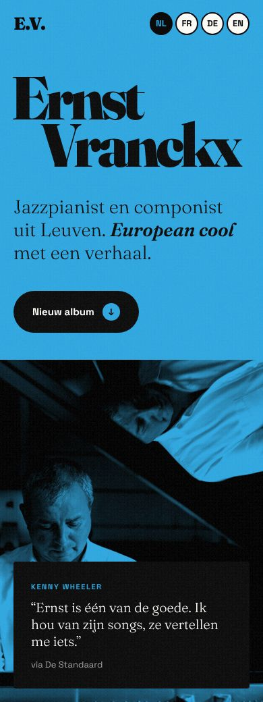
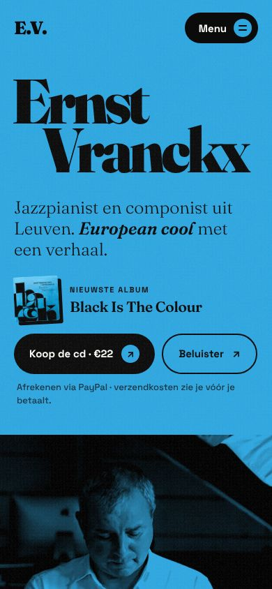
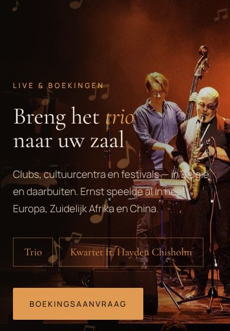
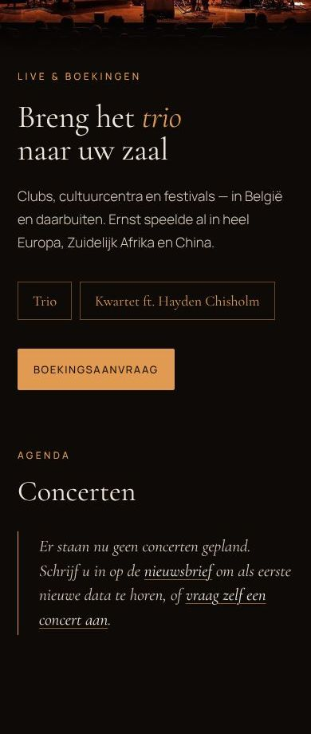
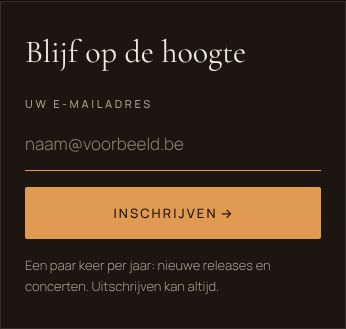
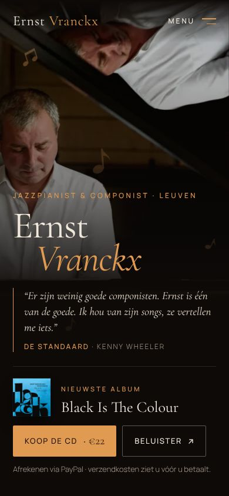
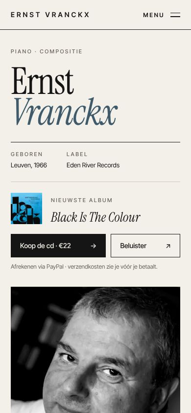

Three homepage designs, before and after two rounds of fixes
Where it stands now
The friction is gone. All three designs now have a working menu on phones, a header that stays on screen, the new album with buy and listen buttons on the first screen, a real newsletter form, a booking path and no dead links. All three pass the automated checks at both sizes.
No design scores 5/5 on everything yet. Navigation and clarity now score 5 in most cases. The remaining points are lost on content the site doesn't have yet (shipping costs, a listening fragment, translations), on page length on phones, and on C's amount of motion.
Choosing a direction is now a matter of character, not usability. C sells the album hardest, B is the calmest and reads best, and A has the most atmosphere.
Scorecard
My ratings out of 5 against the brief, before the fixes and now.
| Criterion | A · Nocturne | B · Liner Notes | C · Colour |
|---|---|---|---|
| Clean (little visual noise) | 2 → 4 | 4 → 4 | 2 → 3 |
| Frictionless (nothing fake, nothing broken) | 2 → 4 | 3 → 4 | 3 → 4 |
| Clear (main goal obvious in 5 seconds) | 2 → 5 | 3 → 4 | 4 → 5 |
| Easy to navigate | 3 → 5 | 2 → 5 | 2 → 5 |
| Works on a phone | 2 → 4 | 3 → 4 | 3 → 4 |
| Beautiful | 4 → 4 | 4 → 4 | 4 → 4 |
| Page length on phone | 12 → 12.4 screens | 14 → 15.2 screens | 12 → 12.9 screens |
How the fixes were chosen
Five independent reviews were run, each asked what it would take to get every design to 5/5. None of them saw this audit. Together they proposed about 300 changes.
Round 1: only the changes all five reviewers proposed, about 35 in total.
Round 2: the changes four of the five proposed, plus three layout bugs found in this audit that the reviews also flagged. It also includes two smaller items you approved, which fewer reviewers had raised: a sound toggle in B and C (2 of 5) and years in B's catalogue (3 of 5).
Changes proposed by three or fewer reviewers were not applied. They are listed under "What still stands between these designs and 5/5".
What changed
In all three designs
- Navigation: a mobile menu, a header that stays on screen while you scroll, six menu items (Muziek, Pers, Live, Over Ernst, Discografie, Contact) that highlight the section you're in, and anchor links that land below the header.
- Page order follows the business goals: album → press → live and bookings, with an agenda → about Ernst (bio and timeline together) → discography → contact and newsletter.
- Album first: cover, "Nieuwste album · Black Is The Colour", "Koop de cd · €22" and "Beluister ↗" on the first screen at both sizes. Under every buy button: "Afrekenen via PayPal · verzendkosten zie je vóór je betaalt". The album section has explicit Apple Music / Spotify buttons, and the Apple Music link now opens the album instead of a single track.
- No dead ends: every outbound link lives in one config (
assets/js/site.js). Missing links hide themselves until they are filled in. Booking buttons open a ready-made e-mail template, and phone numbers can be tapped. - New blocks: a real newsletter form with error and success states, a concert agenda that shows an invitation when there are no dates, and footers with navigation, streaming links and privacy.
- Press: real headings, and the same caption format everywhere (outlet, reviewer, album, year). French and English quotes are marked with their language.
- Accessibility: skip link, visible keyboard focus, readable contrast, tap targets of at least 44px, and a clear sound toggle.
- Speed and sharing: self-hosted fonts, WebP photos with fixed dimensions and lazy loading, a meta description, a share image, and structured data for the album and its CD offer.
- The timeline entry that read "’90" between 1996 and 1998 now reads "Na 1996".
Per design
- A: fake audio player removed, floating notes only in the hero, one piano divider instead of three, and a plain-text track list. Timeline keys fit on a phone and only respond to arrow keys when focused. On phones, the live photo now sits above the booking text and contact labels sit above their values.
- B: new "Live & boekingen" section. The piano-key strip is now a thin progress line, and the hero caption is no longer covered. The timeline works with the keyboard and the quote block lines up with the grid. Press is cut to six quotes that read left to right. On phones the catalogue shows proper buttons and the e-mail address no longer breaks mid-word.
- C: the marquee has a pause button, and the animation loop only runs while something moves on screen. There is now one smaller piano band, larger timeline dots and real release years. The phone hero shows Ernst's face, and the cream strip in the live section on phones is gone.
Before and after
C · phone hero


Album and buy button on the first screen; the photo shows Ernst's face instead of the lid reflection.
A · live and booking on a phone


The text sits on a solid background, with the agenda's empty state below.
A · newsletter on a phone

A real form with a label, a full-width button and a consent line.
B · hero caption and e-mail
The caption is visible, the "01 / 05" counter is gone, and the address no longer breaks.
First screen on a phone, now


Original findings, status
| Finding from the first audit | Status |
|---|---|
| No menu on phones | Fixed |
| Menu disappears on scroll (B, C) | Fixed |
Things that look clickable but do nothing; dead # links | Fixed |
| New album not on the first screen (A, B) | Fixed |
| Too much decoration | Fixed in A and B Partly in C |
| Career story told two or three times | Partly |
| Booking and buying friction | Partly |
| Sound without warning | Fixed |
| Text too faint or too small | Fixed in A and B Open in C |
| Inconsistent discography years | Fixed |
| Menu labels don't match sections | Fixed |
| Layout bugs (B caption, B quote alignment, B e-mail, A newsletter, C live gap, C phone hero) | Fixed |
What still stands between these designs and 5/5
Needs input from the client
- P0Shipping costs, delivery time and a proper checkout
The buy button still opens a bare PayPal page addressed to a private hotmail account. A PayPal hosted button or a payment link with shipping options, plus one line stating the cost and delivery time, closes the last gap in "Frictionless".
- P1A 30–60 second listening fragment
Listening is the strongest step before buying. With an audio file, each design can get a real play button in the album section, which none has now.
- P1Missing links and services
Spotify, socials, press kit, privacy statement, newsletter service, concert dates and the FR/DE/EN pages. Each one appears automatically once its URL is added to
assets/js/site.js.
Design work proposed by three or fewer of the five reviews
- P1Shorter pages on phones
B runs to 15 phone screens. Tighter section spacing on phones, a two-paragraph bio with "Lees meer" and dropping B's duplicate timeline index would bring all three to about 9–10 screens.
- P1C: calmer and more legible
Remove the EQ bars and the floating notes in the press section, use solid black instead of faded text on blue (now about 3.5:1), and replace the "E.V." initials with the full name.
- P2Reveal animations
Content still fades in over about a second as you scroll. Shorter fades (≤0.5s), and none on headings or buy buttons, would make fast scrolling and anchor jumps feel immediate.
- P2Readability details
A's body text is light weight (300) on near-black; 400 reads better on phones. Line-up names vary between pages ("Trio ft.", "kwartet", "Kwartet ft."), which matters to organisers.
- P2Real-world testing
Test on a mid-range Android phone and with German and French strings, which run about 30% longer, before the final choice.